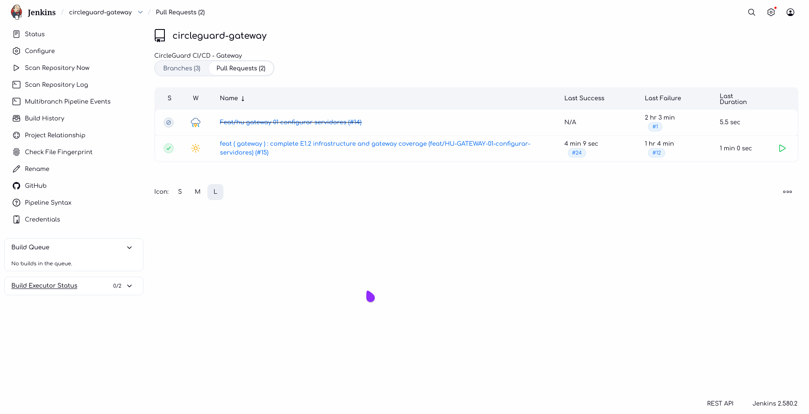

<!-- CG-DOC: Evidence report for idempotent CircleGuard infrastructure bootstrap. -->
Proyecto: CircleGuard
Rama de prueba: test/HU-INFRA-01-idempotencia
Rama del PR: feat/HU-GATEWAY-01-configurar-servidores
Región: us-east-2
Fecha: 8 de noviembre de 2026
Demostrar que ./infra/bootstrap/bootstrap-all.sh converge al mismo estado al ejecutarse dos veces, sin duplicar recursos AWS, rotar secretos, recrear contenedores ni duplicar usuarios o proyectos en Nexus y SonarQube.
Segunda ejecución: exit=0
Diferencia antes/después: 0 líneas
El archivo diffs.txt quedó vacío.
| Elemento | Resultado |
|---|---|
| IDs de EC2 | Sin cambios |
| IPs privadas y públicas | Sin cambios |
| Elastic IP | Sin cambios |
| Security Groups y reglas | Sin cambios |
| Key pair | Sin cambios |
Hash de .env local y remoto |
Sin cambios |
| IDs e imágenes de contenedores | Sin cambios |
| Repositorios y usuarios Nexus | Sin cambios |
| Proyectos y usuarios SonarQube | Sin cambios |
| Jenkins recreado | No |
Comparación antes/después con diffs.txt vacío, estado de las instancias EC2, Elastic IP, hashes de .env y contenedores en ejecución.
Pipeline multibranch con PR-15 construido y aprobado. El PR ejecuta CI; el CD queda reservado para main.

Proyecto CircleGuard Gateway con Quality Gate Passed: 0 bugs, 0 vulnerabilidades, 0 code smells y cobertura de 88.7 %.

Repositorios circleguard-docker, maven-central, maven-public, maven-releases, maven-snapshots, nuget-group, nuget-hosted y nuget.org-proxy en estado Online.

docs/infra/evidence/idempotency/
├── README.md
├── diffs.txt
├── files.before
├── files.after
├── remote-env.before
├── remote-env.after
├── instances.before.json
├── instances.after.json
├── eips.before.json
├── eips.after.json
├── sgs.before.json
├── sgs.after.json
├── keys.before.json
├── keys.after.json
├── tools.containers.before.txt
├── tools.containers.after.txt
├── dev.containers.before.txt
├── dev.containers.after.txt
├── stage.containers.before.txt
├── stage.containers.after.txt
├── prod.containers.before.txt
├── prod.containers.after.txt
├── nexus-repos.before.json
├── nexus-repos.after.json
├── nexus-users.before.json
├── nexus-users.after.json
├── sonar-projects.before.json
├── sonar-projects.after.json
├── sonar-users.before.json
├── sonar-users.after.json
├── bootstrap-final-run.log
└── migration-run.log
.env remoto no se copiaba completo al localbootstrap-all.sh copiaba el .env remoto solo a infra/state/tools.env, no a deploy/compose/tools/.env. Eso hacía que el SONAR_TOKEN y las contraseñas del profesor se regeneraran en cada corrida.
Corrección:
infra/state/tools.env a deploy/compose/tools/.env;PROFESSOR_SONAR_PASSWORD y PROFESSOR_NEXUS_PASSWORD al .env local.compose_up usaba --build siempre. Aunque el contenedor no se recreaba, la etiqueta de imagen apuntaba a una imagen nueva y el contenedor quedaba en una imagen vieja.
Corrección:
circleguard-tools-jenkins no existe;compose up sin --build cuando la imagen ya existe.En SonarQube el usuario professor se creaba con || true: si ya existía, la contraseña del .env nunca se aplicaba. En Nexus el PUT del usuario devolvía 204 pero no actualizaba la contraseña. El resultado era un usuario existente que no podía autenticarse.
Corrección:
professor y usar api/users/change_password si la autenticación falla;professor y usar security/users/professor/change-password si la autenticación falla;test/HU-INFRA-01-idempotencia desde el HEAD actual..env, recursos AWS, contenedores, Nexus y SonarQube../infra/bootstrap/bootstrap-all.sh.diff.diffs.txt vacío.El bootstrap es idempotente para el alcance de E1.2. La segunda ejecución no cambió recursos, secretos, contenedores, repositorios ni usuarios. La evidencia queda separada en la rama de prueba y los fixes de idempotencia están en el PR.